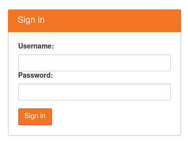

Students¶
Depending on the courses, students can use one of two JupyterHub servers to work on assignments. These servers can also be used for a light computing or programming. However, if you need more resources (CPU, RAM and GPU) for your projects, you can have a look at Bonn-Rhein-Sieg university scientific computing.
1. Publicly accessible server (https://notebooks.inf.h-brs.de) used for the following courses:
Grundlagen von Wahrscheinlichkeitstheorie und Statistik (WuS WS20)
Local server (10.20.168.244:30300) used for the following courses:
Mathematics for Robotics and Control (MRC WS20)
Robot Perception (RP SS20)
Robot Manipulation (RM SS20)
Natural Language Processing (NLP SS20)
Note
These JupyterHub servers are not a replacement of the current LMS (LEA.). These are just compute resource for students to work on their assignments. The assignments and feedback might also be released on LEA. LEA forum is also available should you have any problem with the assignments or the server.
Login to E2x JupyterHub¶
One server has a public IP which can be accessed from everywhere and the other server is only accessible from inside the university network, VPN or via ssh tunneling to the FB02 homepage home.inf.h-brs.de
1. https://notebooks.inf.h-brs.de¶
- Courses:
Grundlagen von Wahrscheinlichkeitstheorie und Statistik (WuS WS20)
First, you need to sign up to the server if you have not done so, then the instructor will authorize you. Keep in mind that you need to be registered in the corresponding LEA course, otherwise you will not be able to log in.
Signup
Click on Signup and fill in your username (FB02 UID, for examlple mwasil2s) and your password. The server only accepts FB02 UID as username. Also, do not use the same password as your username.

Note
If you are already registered on the LEA course, you can sign in automatically. Otherwise, you will need to wait until the instructor authorizes you.
Change password
If you are not happy with your password, you can change it via JupyterHub home. Open control panel on the top right,

Then on the top left, you will find a button Change password which brings you to change-password form

Change password form

Warning
Do not use the same password as your username. If you forget your password, please contact your instructors or e2x admin.
2. Local server (10.20.168.244:30300)¶
- Courses:
Mathematics for Robotics and Control (MRC WS20)
Robot Perception (RP SS20)
Robot Manipulation (RM SS20)
Natural Language Processing (NLP SS20)
Access
There are two ways to connect to the local-hosted JupyterHub:
VPN
You need to setup VPN in order to get access to the hub. To use FB02 VPN, you need to follow a complete instruction from https://ux-2s18.inf.h-brs.de/faq/vpn. Once you get connected to the VPN, you can open the browser and go to 10.20.168.244:30300.
SSH port forwarding
The server can also be accessed using ssh port forwarding through the FB02 homepage home.inf.h-brs.de. This will tunnel the server hub port to your local machine. If you use Linux or Mac OS, you can just open terminal and type the following
ssh -L 30300:10.20.168.244:30300 username2s@home.inf.h-brs.dereplace username2s with your FB02 UID.
Then you can open browser, and go to localhost:30300
Login
The local server uses FB02 LDAP to authenticate the users. Thus, you do not need to signup to get access to the servers. However, the instructor is required to add your FB02 UID to the allowed list, and student course list.
You may be prompted with different server options during spawning. In some cases, we provide different environments with datasets, particular libraries, etc. However, the default will be loaded with general libraries required for all courses.

Assignments¶
We use nbgrader to manage the assignments. The due date should be the same as on LEA. So you have to submit the assignments before the due date.
Fetch Assignments
Navigate to the assignments tab and click fetch

Open the fetched assignments

You can also go to Files tab, and refresh the page to see all fetched assignments.
Warning
Do not open the assignment in multiple tabs, windows or browser. You might overwrite unsaved changes!
Submit Assignments
To submit the assignments, go to Assignments tab again, and click Submit. You can submit your assignments multiple time as long as you do it before the due date.

Note
If you have problems submiting the assignments via the servers, you can of course submit them via LEA.
Resources and Quota¶
The student server is limited to 2 cores of CPUs and 1GB of RAM, and 1GB of storage. Anything under /home/jovyan is persistent and the rest will be regenerated when you restart the server. This storage can be increased according to the request from the instructors, but this can only be done if the request is proposed before the semester starts.
This persistent data will be deleted after Einsicht which normally happens in the next semester after you do the exam.
Note
We suggest you to always backup you data in your local machine.
Automatic kernel and server culling
Culling idle kernel
Idle notebook kernel whithout any activities for one hour will be culled automatically. If this happens and you want to come back to your work, you should restart your kernel by going to Kernel tab and choose Restart and Clear Output.
You can also restart your server by going to Control Panel menu (on the top right) and choose Stop My Server and once it’s done stopping the server, click Start My Server to start your server.
Culling idle server
The idle culler automatically shuts down singleuser notebook servers when they are not used for one hour to reduce the resource usage. Users need to relogin to spawn a new server.
Working on the assignments locally¶
The easiest way to setup your local environment is via docker. With docker, you can just pull our docker image and mount the assignments you have downloaded from the server to your container.
Linux and Mac OS
Open terminal and run our image (this will automatically pull and run the docker image)
docker run -it --name notebook -v /home/myhome/assignments:/home/jovyan/assignments --rm -p 8888:8888 digiklausur/notebook-dev:latest- Replace the following:
/home/myhome/assignments –> replace this with the path to your assignment in your local machine
- You can also replace the image,
digiklausur/notebook-dev:latest –> digiklausur/notebook-dev-wus:8bf9827
where latest and 8bf9827 are the image tags.
The output should look like the following
[I 13:24:27.563 NotebookApp] The Jupyter Notebook is running at: [I 13:24:27.564 NotebookApp] http://8ad5cc4be28c:8888/?token=b537e4e4a92b8ba7ac0ca2f5ea2034ac36fcc1d20d0eb53a [I 13:24:27.564 NotebookApp] or http://127.0.0.1:8888/?token=b537e4e4a92b8ba7ac0ca2f5ea2034ac36fcc1d20d0eb53a
Click on the http://127.0.0.1:8888/?token=….
This will take you to your browser once you click that link.
You can also open your browser manually and go to localhost:8888. Then input your token manually if asked.
In this example, your token is b537e4e4a92b8ba7ac0ca2f5ea2034ac36fcc1d20d0eb53a.
Windows
Follow this instruction to install docker engine on Windows 10
Once it gets installed, open Command Prompt
Run our docker image:
docker run -it --name notebook -v C:\Users\MohammadWasil\Downloads\WuS-WS20 --rm -p 8888:8888 digiklausur/notebook-dev:latest
This may take some times to pull from docker image.
Replace C:\Users\MohammadWasil\Downloads\WuS-WS20 with the proper path to your assignments or course.
Once it is done pulling from docker hub, you will get the link and the token, copy that link and open it in your browser

Open Jupyter Notebook server

Notebook tree which shows all files and directories under C:\Users\MohammadWasil\Downloads\WuS-WS20¶
Open the assignment

Assignment 01 directory (WuS-HW01) for WuS.¶

SuperTest.ipynb is the notebook file that you have to work on.¶
Note
If you work locally on your machine, you should re-upload your work to the server, under the corresponding assignment directory. Only files under assignment directory are uploaded to the grading server. Also, make sure all the files required to run your assignment are also uploaded and the paths to the files are properly given in the notebook file.
The DONT’S¶
You are not allowed to:Change the cell metadata
Change directory structure of the assignment
Rename directories or files
Use other libraries which are not defined in our environment
Use different version of our libraries
Change the kernel
Warning
Your submission can be failed to run on the grading server, or cannot be graded if you do the DONT’S.
Environment¶
All environments we use in the servers can be found on our github repository https://github.com/DigiKlausur/docker-stacks.
The docker image we use for each course:
If you want some libraries to be available on the servers, feel free to contribute to our github repositories.
All the software we use and develop are open on our github https://github.com/DigiKlausur/, feel free to comment or raise issues on our github repositories if you want to help us with other things.
FAQs¶
[notebooks.inf.h-brs.de] I cannot login after signup. You may not be registered on the LEA course, contact your instructors to authorize you.
[notebooks.inf.h-brs.de] my username is already used. Please contact your instructors, e2x admins or post this on LEA forum so that they can check and come back to you as soon as possible.